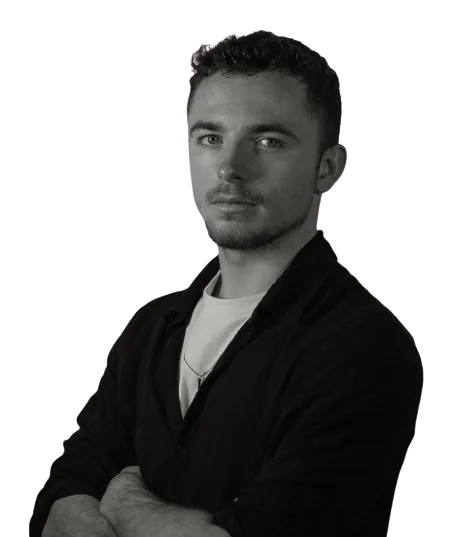
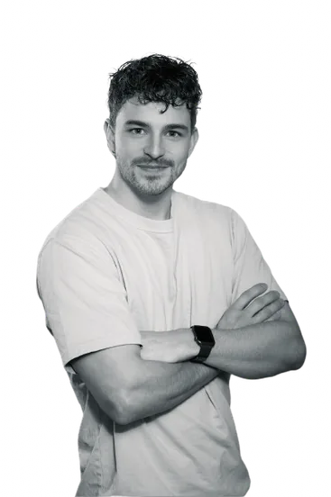

Studio vidéo événementiel — Paris · Lille · Arras
On filme vos soirées, festivals, séminaires, matchs et lancements.
Teasers, aftermovies, films : Arthur & Adrien captent votre événement à deux caméras et en gardent tout le mood.
Ils nous ont fait confiance
- nilsforeal
Ce qu’on filme
De nuit comme de jour.
- 01Soirées & clubsLe souvenir de la nuit
- 02FestivalsLe mood, de l’ouverture au final
- 03Artistes & DJVotre univers en images
- 04Entreprises & marquesVos temps forts, vos produits
- 05Sport & clubsLes moments qui comptent
- 06AssociationsVotre communauté à l’écran
Le studio
Deux vidéastes. Un seul film.
Dynamique & immersif
Arthur


Posé & cinématographique
Adrien
Toujours à deux, sur chaque tournage.
Une soirée, un festival, un événement, ce n’est pas ce qu’on voit. C’est ce qu’on ressent. Notre rôle, c’est de capter cette émotion avant qu’elle ne disparaisse.
Arthur & Adrien — Kelik, depuis 2020
Méthode
De votre idée à votre film.
- 01
L’échange
Un appel ou une visio : on comprend votre événement, votre public, vos envies.
- 02
Le tournage
À deux caméras, au plus près de l’action. On s’adapte au terrain.
- 03
Le montage
Le rythme d’Arthur, le regard d’Adrien, réunis dans un même film.
- 04
La livraison
Votre film, prêt à diffuser. Vos retouches sont prévues dans votre devis.
FAQ
Vos questions.
Vous venez à deux sur chaque tournage ?
Oui, toujours. Arthur et Adrien filment ensemble : l’un au cœur de l’action, l’autre sur des plans plus construits. Au montage, les deux regards se complètent dans un même film.
Où intervenez-vous ?
On est basés entre Paris, Lille et Arras. Votre événement est ailleurs ? Indiquez-le dans votre demande, on regarde ensemble.
Combien ça coûte ?
Chaque projet est différent. Écrivez-nous quelques mots sur votre événement : on vous envoie un devis gratuit et détaillé sous 24 h, sans engagement.
Qu’est-ce qui est compris ?
Le matériel professionnel 4K (caméras, optiques, éclairage, micros), le montage, l’étalonnage, le mixage, les exports adaptés à vos supports, l’assurance responsabilité civile professionnelle et l’archivage de vos fichiers pendant 6 mois.
En combien de temps reçoit-on le film ?
Entre 10 jours ouvrés et 3 semaines, selon la durée du film et le nombre de formats. Le délai exact est écrit sur votre devis. Besoin du film plus vite ? Précisez-le dans votre demande.
Comment se passe le paiement ?
Un acompte de 50 % à la signature du devis réserve votre date de tournage. Le solde est réglé à la livraison.
Et si l’événement est reporté ?
Le report ou l’annulation est sans frais jusqu’à 7 jours avant le tournage.
Vous nous aidez à publier ?
Oui. Des formats verticaux pour vos réseaux et un plan de publication (quoi poster, quand, avec quelle légende) peuvent être ajoutés à votre demande.